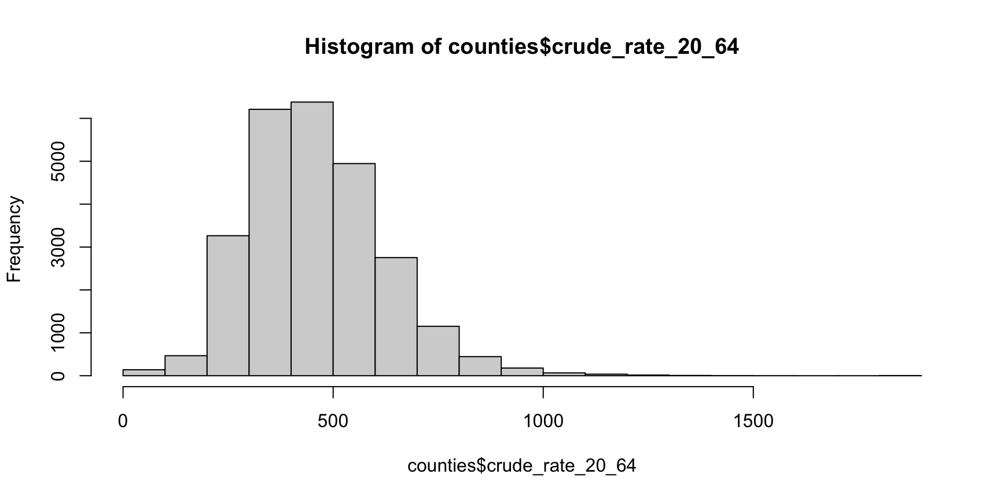
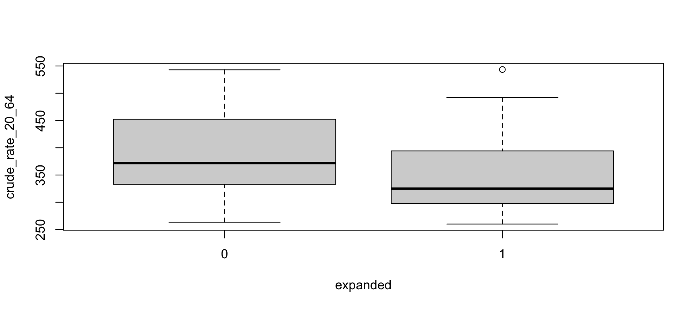
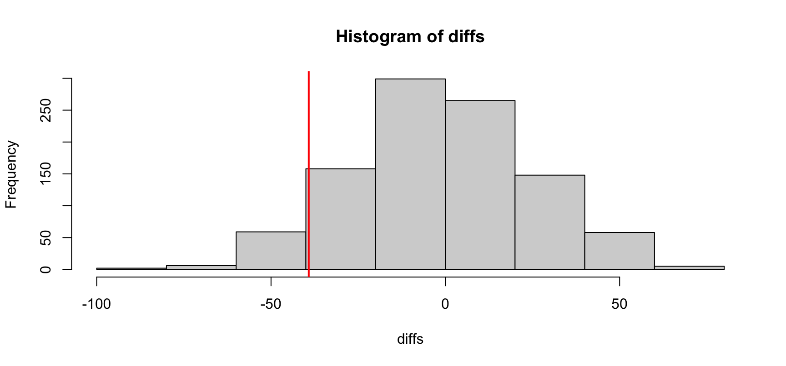

StatLab Workshop 01: Introduction to R
You will have run a complete statistical analysis in R:
It takes twenty-three functions. That is the whole list.
Did states that expanded Medicaid in 2014 have lower working-age mortality than states that did not?
Explore: What does mortality look like across states that expanded medicade and those that did not? → hist(), boxplot(), group means
Test: Is the difference in these states bigger than chance would produce? → t.test(rate ~ expanded)
Check: does the answer to our second question depend on unreasonable assumptions? → permutation test
Extend: how can we formally express and model these differences?. → lm(rate ~ expanded)
| Module 1 | I do | I drive. You type every line with me. |
| Module 2 | We do | Pairs. Most of the code is given; you write the four that matter. |
| Module 3 | You do | On your own. Eight steps, no code. |
The analysis is the same shape all three times. That is deliberate, because by the third pass, the shape is yours.
Red sticky = stuck. Green = through. Put the red one up early.
We are using Positron, Posit’s data-science IDE, the one they are building next after RStudio.
01-RStats folderscripts/01-i-do.R from the file list on the leftOpen the folder, not a file. Positron makes whatever folder you open the working directory, which is the whole reason we will never type a file path today.
Activity Bar
Explorer Your files. scripts/, data/, and the rest of the folder you opened.
Editor Where you write.
scripts/01-i-do.R opens here.
Cmd+Enter sends the current line down to the Console.
Variables What currently exists. Watch states appear here when you make it.
Plots Where pictures land.
Both live in the right sidebar. Click between them.
Console Where it runs. Your code arrives here, and R answers underneath.
The Data Explorer. Click a data frame in Variables and you get a real spreadsheet view: sort it, filter it, see the type and missingness of every column. It is the fastest way to answer “what am I actually looking at?”
One IDE for R and Python. The interpreter picker in the top-right switches languages. Nothing today needs it, but it is why Positron exists.
Everything else (the Command Palette, extensions, source control) you can ignore for three hours. Editor, Console, Variables, Plots. That is the whole interface today.
Everything in R is an object or a function.
That is the whole vocabulary. Every line today is one or both.
read.csv(“data/medicaid.csv”, row.names = 1)
read.csv is the function name. It says what you want done.
( ) holds everything the function needs to know.
"data/medicaid.csv" is the first argument: which file to read.
row.names = 1 is a named argument. It changes how the function behaves: treat column 1 as row labels, not data. That is why we get 13 columns from a 14-column file.
, separates one argument from the next.
Two questions get you through any function: what do I want R to do, and what does R need to know to do it?
Nothing printed. That is what success looks like: <- stores silently.
Look at the Variables pane. counties is now in it.
[1] "state" "county" "county_code"
[4] "year" "population_20_64" "yaca"
[7] "perc_white" "perc_hispanic" "perc_female"
[10] "crude_rate_20_64" "unemp_rate" "poverty_rate"
[13] "median_income" state county county_code year population_20_64 yaca perc_white
1 AL Autauga County, AL 1001 2009 31271 NA 80.42915
2 AL Autauga County, AL 1001 2010 31875 NA 80.44549
3 AL Autauga County, AL 1001 2011 32538 NA 79.56850
perc_hispanic perc_female crude_rate_20_64 unemp_rate poverty_rate
1 2.078603 51.48220 412.5228 8.905110 11.2
2 2.240000 51.38196 423.5294 8.808109 11.9
3 2.311144 51.14635 482.5128 8.345908 14.9
median_income
1 53.081
2 53.049
3 48.863Ask these of every new dataset: how big, what columns, what’s a row.

Never test a variable you have not looked at. Defaults are fine; we are not decorating anything yet.
$?hist(counties$crude_rate_20_64)
You have not seen that symbol before. Don’t look it up yet.
Use what is already on the screen:
counties is the table you just read incrude_rate_20_64 was in the list names() printed$ has to join a table to one of its columns“
counties… thecrude_rate_20_64one.”
You just read a symbol you had never seen, correctly, without looking it up.
hist(counties$crude_rate_20_64) has two steps, and the inner one happens first.
counties$crude_rate_20_64 pulls the column out. On its own it is a vector: one number per county.hist() draws that vector.“Take the
crude_rate_20_64column out ofcounties, and draw a histogram of it.”
Every county in Alabama has the same Medicaid policy as every other county in Alabama.
So the thing that varies is the state, not the county. Thirty-nine states decided; 2,372 counties did not each decide separately.
We need one row per state before we compare anything. That takes three moves: keep one year, label each state, then average to the state.
Square brackets take a slice: df[rows, columns]. We asked for rows where year is 2014, and left the column slot blank to mean “all of them”.
== asks is this equal to. It is a question, not an instruction — that is why it is doubled.
d2014 <- counties[counties$year == 2014, ]
Longer lines are still one sentence. Start at the right:
counties[counties$year == 2014, ] says from counties, keep the rows where year is 2014, and every column …<- says … and store it …d2014 says … as d2014.“From
counties, keep the rows whereyearis 2014 and every column, and store that asd2014.”
Whatever is left of the arrow is the name you are giving to the result. If you can say a line out loud, you understand it. If you cannot, that is where to stop and ask.
0 1
1337 1035 ifelse(test, value_if_true, value_if_false) runs down the whole column.
Note $ doing a second job: on the left of <- it creates a column rather than pulling one out.
!is.na() guardStates that never expanded have yaca = NA.
NA == 2014 is not FALSE. It is NA — R is saying “I don’t know.”
Without the guard, every one of those rows comes back NA, R gives no error, and every mean you compute afterwards is NA. ! means “not” and & means “and”, so the guard reads: not missing, and equal to 2014.
Silent wrong answers are worse than errors. This is the most common way R hands you one.
The help page opens in the Help pane. The Usage line at the top lists every argument and its default:
Three questions for the room:
mean() take?na.rm do? (scroll to Arguments)na.rm = FALSE is the defaultR will not skip missing values unless you tell it to.
Fifteen county-year rows are missing an income. One NA is enough to make the whole answer NA.
This is the most common “why is my result NA?” in R. When it happens, ? the function and look at what its defaults were doing.
states_unwt <- aggregate(crude_rate_20_64 ~ state + expanded,
data = d2014, FUN = mean)
dim(states_unwt)[1] 39 3Read it out loud: average crude_rate_20_64, by state and expansion status.
FUN = mean passes the function itself, with no parentheses. FUN = mean() would try to run it right now, on nothing.
y ~ xThat squiggle is the most reusable thing you will learn today.
goal( y ~ x , data = d )
Read ~ as “broken down by”.
aggregate(rate ~ expanded, data = states, FUN = mean) |
group means |
boxplot(rate ~ expanded, data = states) |
a picture |
t.test(rate ~ expanded, data = states) |
a test |
lm(rate ~ expanded, data = states) |
a model |
You have used it once. You will use it four more times before lunch.
224 people, and 6.3 million. Averaging county rates gave Loving County, Texas the same weight as Los Angeles.
d2014$deaths <- d2014$crude_rate_20_64 * d2014$population_20_64 / 1e5
state_deaths <- aggregate(deaths ~ state + expanded, data = d2014, FUN = sum)
state_people <- aggregate(population_20_64 ~ state + expanded, data = d2014, FUN = sum)
states <- state_deaths
states$crude_rate_20_64 <- state_deaths$deaths /
state_people$population_20_64 * 1e5
states <- states[order(states$state), ]
states_unwt <- states_unwt[order(states_unwt$state), ]Add up the deaths, add up the people, divide once. Same aggregate() template, FUN = sum instead of mean.
Sorting matters: aggregate() returns rows grouped, not alphabetically, and the same set.seed() on a different row order gives a different p-value.
Min. 1st Qu. Median Mean 3rd Qu. Max.
-6.355 35.360 71.739 63.498 82.872 137.373 [1] "AR" "AZ" "CA" "FL" "GA" "IL" "KS" "MO" "NC" "ND" "NM" "OK" "OR" "SC"
[15] "SD" "TN" "TX"Texas is off by more than 130 deaths per 100,000, which is larger than any difference we are about to look for. We use the weighted version, because it is the state’s actual rate.
hist(counties$crude_rate_20_64)
“Take the crude_rate_20_64 column out of counties, and draw a histogram of it.”
d2014 <- counties[counties$year == 2014, ]
“From counties, keep the rows where year is 2014 and every column, and store that as d2014.”
aggregate(crude_rate_20_64 ~ state, data = d2014, FUN = mean)
“Using the d2014 data, average crude_rate_20_64 broken down by state.”
d2014$deaths <- d2014$crude_rate_20_64 * d2014$population_20_64 / 1e5
“Multiply each county’s rate by its population, divide by 100,000, and store the result as a new column called deaths.”
table(states$expanded)
“Take the expanded column out of states, and count how many of each value there are.”
high_pov <- states[states$poverty_rate > 20, ]
“From states, keep the rows where poverty_rate is above 20 and every column, and store that as high_pov.”
aggregate(poverty_rate ~ expanded, data = states, FUN = mean)
“Using the states data, average poverty_rate broken down by expanded.”
states$big <- ifelse(states$poverty_rate > 20, 1, 0)
“Test whether each state’s poverty_rate is above 20, give it 1 if yes and 0 if no, and store that as a new column called big.”

group_means <- aggregate(crude_rate_20_64 ~ expanded,
data = states, FUN = mean)
diff_obs <- group_means$crude_rate_20_64[2] - group_means$crude_rate_20_64[1]
diff_obs[1] -39.17766Expansion states averaged about 64 fewer deaths per 100,000 working-age people.
Is that more than luck would hand us?
Welch Two Sample t-test
data: crude_rate_20_64 by expanded
t = 1.5435, df = 34.632, p-value = 0.1318
alternative hypothesis: true difference in means between group 0 and group 1 is not equal to 0
95 percent confidence interval:
-12.37175 90.72706
sample estimates:
mean in group 0 mean in group 1
390.1661 350.9884 Read all of it. The interval tells you the size of the gap the data supports. The p-value never does.
We computed diff_obs = −64. The interval says +7 to +121.
That is not an error, and it is not you.
t.test() subtracts group 0 − group 1. We did group 1 − group 0. Same gap, opposite sign. Check it against the group means at the bottom.
This catches everyone once. When a sign looks wrong, find out which way round the subtraction went before assuming you broke something.
t = 2.29 and df = 34.04 you can ignore today.
Most of us walk in carrying this one:
“p is the probability the result is due to chance.”
It’s the most common answer, and it has the logic backwards. A p-value never tells you the probability that chance caused your result.
It assumes chance is all there is, and then asks:
if expansion made no difference at all, how often would luck alone hand us a gap as big as ours?
We don’t have to trust a formula for this. We can just do it.
shuffled <- sample(states$expanded)
mean(states$crude_rate_20_64[shuffled == 1]) -
mean(states$crude_rate_20_64[shuffled == 0])[1] 23.38928Run it again:
shuffled <- sample(states$expanded)
mean(states$crude_rate_20_64[shuffled == 1]) -
mean(states$crude_rate_20_64[shuffled == 0])[1] -52.08244That bouncing is sampling variation. You are looking straight at it.
replicate() does a thing n times and keeps the answers.
One thousand worlds in which the policy did nothing.

Same hist() from step 2, pointed at something new. That number is a p-value you built out of sample(), mean(), and counting.
abs() |
drops the minus sign, so we count both tails: past −39 and past +39. That is what “two-sided” means, and it is what t.test() did. |
>= |
gives a TRUE/FALSE for each of the 1000 shuffles |
mean() |
of TRUE/FALSE gives the proportion that are TRUE, because TRUE counts as 1 |
abs() and see0.93, not something near 0.07. Our difference is negative, so “shuffles at least as large as ours” counts almost all of them.
R does not warn you. If you want the one-sided p in the direction of the effect, it is mean(diffs <= diff_obs). Getting this wrong returns a number, not an error.
t.test()Permutation gave 0.139. The t-test gave 0.132.
t.test() assumes the difference follows a normal distribution. The shuffle does not. It does assume the labels could have been dealt out any other way, which is true here because each state chose once.Two methods, same conclusion: this difference is not distinguishable from chance with 39 states.
Call:
lm(formula = crude_rate_20_64 ~ expanded, data = states)
Residuals:
Min 1Q Median 3Q Max
-126.81 -55.30 -20.92 52.62 192.52
Coefficients:
Estimate Std. Error t value Pr(>|t|)
(Intercept) 390.17 19.08 20.454 <2e-16 ***
expanded -39.18 25.40 -1.543 0.131
---
Signif. codes: 0 '***' 0.001 '**' 0.01 '*' 0.05 '.' 0.1 ' ' 1
Residual standard error: 78.65 on 37 degrees of freedom
Multiple R-squared: 0.06043, Adjusted R-squared: 0.03503
F-statistic: 2.38 on 1 and 37 DF, p-value: 0.1314Both on the expanded row:
Estimate |
−39.18 | our difference in means, exactly |
Pr(>|t|) |
0.13 | our p-value |
And one bonus, on the row above: (Intercept) is the mean of the group coded 0 — the same number from step 4. The intercept is just the baseline group.
Everything else (Residuals, Std. Error, R-squared, F-statistic) answers questions we haven’t asked. You are not missing something by skipping them today.
A difference in means is a regression coefficient.
t-test, permutation test, and regression are three ways of asking one question, and they agree.
Once you can read this output you can read most quantitative papers.
(t.test() uses Welch’s correction by default, which is also why its df was 34.04 rather than 37. var.equal = TRUE matches lm() to the decimal.)
That is the same test, run on the counties.
p is about 6e-17. Overwhelming, and wrong.
It believes it has 2,372 independent observations. It has 39. Every county in a state shares one policy decision, so those rows repeat 39 pieces of information rather than adding 2,372 new ones.
When a p-value looks too good, ask how many independent things you actually measured. It is usually fewer than the number of rows.
read.csv dim names head summary hist boxplot abline
ifelse is.na table aggregate mean median abs range
c order t.test lm
sample set.seed replicateTwenty-three functions, and you have a difference in means, a permutation test, and a regression, plus the reason to distrust one of them.
Get data, look at it
read.csv() |
read a spreadsheet off disk |
dim() |
how many rows and columns |
names() |
what are the columns called |
head() |
show the first few rows |
summary() |
six-number sketch of a column |
Pictures
hist() |
distribution of one variable |
boxplot() |
compare groups |
abline() |
add a line to the last plot |
Build a grouping variable
ifelse() |
test each value, return 1 or 0 |
is.na() |
is this value missing? |
table() |
count how many in each category |
Summarise
aggregate() |
apply a function, split by group |
mean() |
average, and on TRUE/FALSE a proportion |
median() |
the middle value |
abs() |
drop the minus sign |
range() |
smallest and largest |
c() |
glue values into one vector |
order() |
the positions that would sort something |
Test and model
t.test() |
compare two group means |
lm() |
fit a linear model |
summary() |
also prints a model’s coefficient table |
The permutation test
sample() |
shuffle into a random order |
set.seed() |
make the shuffling repeatable |
replicate() |
do something n times, keep the answers |
Two more appear only in the finish-early extensions: plot() and sum().
# |
everything after it is ignored | # this is a note |
<- |
store this as | x <- 5 |
= |
name an argument, inside a function | data = states |
() |
run a function; what it needs goes inside | mean(x) |
, |
separates one argument from the next | hist(x, breaks = 20) |
$ |
pull one column out of a data frame | states$expanded |
~ |
“broken down by” | rate ~ expanded |
== |
is equal to: a question, not an instruction | year == 2014 |
>= <= > < |
the usual comparisons | diffs >= 64 |
! |
not | !is.na(x) |
& |
and | !is.na(x) & x == 2014 |
{ } |
treat several lines as one block | inside replicate() |
= and <- both assign, and you will see both. We use <- for storing things and keep = for naming arguments. It makes the two jobs visible.
The one that catches everyone. Same symbol, three different meanings:
df[rows, cols] |
slice a table, note the comma | counties[counties$year == 2014, ] |
x[2] |
pick one element out of a vector | group_means$crude_rate_20_64[2] |
x[test] |
keep the elements where a test is TRUE | states$crude_rate_20_64[shuffled == 1] |
If you get undefined columns selected, you almost certainly left out the comma in the first form.
Open scripts/02-we-do.R.
Do high-poverty states have higher working-age mortality?
______, fill it in.Two things you have not seen:
Making groups from a number. Expansion came ready-made as 0/1. Poverty is continuous, so you split it at the median with ifelse().
A result that runs off the page. Your observed difference may fall outside the whole null distribution:
If mean(abs(diffs) >= abs(diff_obs)) gives you 0, that is not p = 0. None of 1000 shuffles got that far, so report p < 0.001.
Open scripts/03-they-do.R.
Do states with above-median unemployment have higher working-age mortality?
median_income. Does the story change?plot(), then abline(lm(...)). What did the split cost?ggplot2 for nicer plots. Workshop 09.dplyr / the tidyverse for nicer data wrangling. Workshop 03.None of it is a prerequisite for what you did today. You can start Monday with twenty-three functions.
Always open the folder. Never write setwd("/Users/you/..."). It works on exactly one computer, and not for long. Open the project folder and every path in your script stays relative.
Never use rm(list = ls()). It does not give you a clean session; it doesn’t unload packages or reset options. Restart R instead: Cmd/Ctrl+Shift+0.
If a script only runs after you have run some other thing first, it isn’t finished.
?mean |
R’s own help, and it is better than it looks |
| StatLab office hours | a human, free, and the fastest option |
| Error message → search | paste it verbatim, someone has had it |
Your script from today is the best reference you now own. It works, you typed it, and you know what every line does.